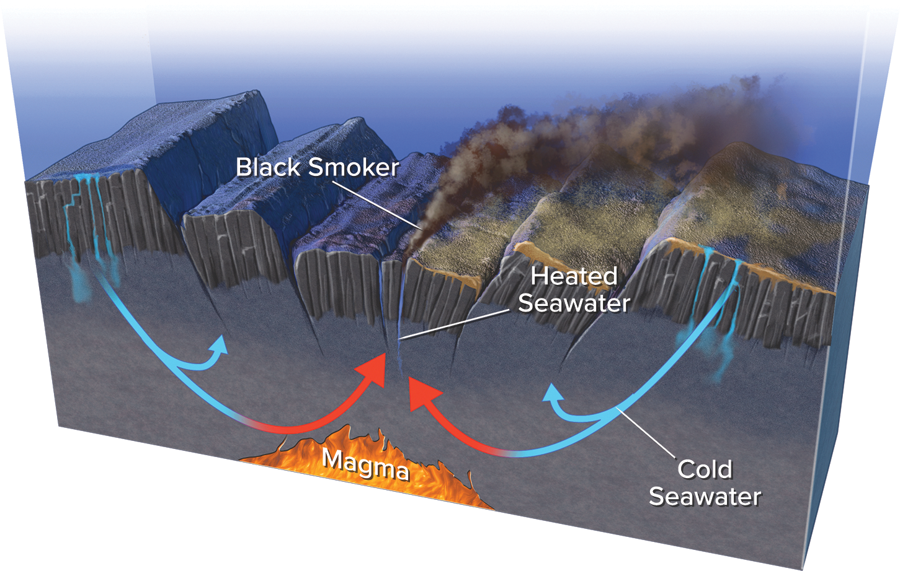

Course source and limits
GEOL 1001 · Exam 2 · Chapter 10. Original teaching reconstruction from in-class Lecture 15 slide 9 and supplied textbook 10.2. Distances, material dimensions, and process time are schematic. Compare the unaltered source illustration.
